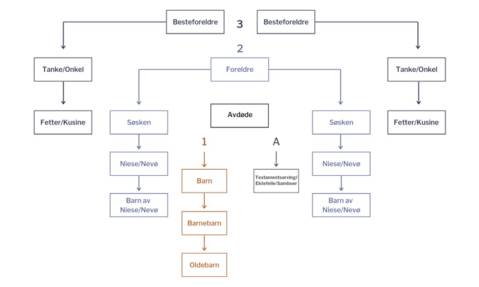

Kapitel 18 Arveretten

Forståelsen af reglerne om arv kan være anvendelig for dig, der skal arbejde i ejendomshandel, ejendomsadministration, bank og realkredit, forsikring, samt revision og økonomifunktion i forbindelse med sikkerhedsstillelse ved lån til ægtefællerne ved deres køb af fast ejendom, lejeforhold og ved låneoptag mv.
“De arveretlige regler” anvendes også i fx faget “Privatøkonomisk rådgivning” på finansøkonomuddannelsen
Video om hvem arver fra dig?
Døden er en gæld, som ingen kan betale mere end èn gang. - Shakespeare.
18.1 Introduktion til arveretten
Med arvelovsrevisionen er der blevet gennemført en styrkelse af den længstlevende ægtefælles retsstilling.41
Se nærmere “arveloven” Lovsamlingen klik her!
Ægtefæller vil typisk have et ønske om, at længstlevende så vidt muligt kan fortsætte sin livsførelse.
Arveloven (AL) Lov 2007-06-06 nr. 515, er derfor søgt indrettet, så dette ønske i højere grad kan realiseres, uden at ægtefællerne behøver at oprette et testamente om begrænsning af børnenes arv.
Dette er navnlig sket ved en forhøjelse af den legale arveret, fra 1/3 til 1/2 af arveladerens ejendele, når arveladeren samtidig efterlader sig børn (livsarvinger).
Arveloven indebærer endvidere, at arvelader har fået større frihed til at disponere over sin formue ved oprettelse af testamente.
Livsarvingernes tvangsarv er således nedsat fra 1/2 til 1/4 af den legale arv.
Også ægtefællens tvangsarv udgør fremover ¼ af den legale arv.
Endvidere er indført en adgang for arvelader til at begrænse en livsarvings tvangsarv til 1 mio. kr., ligesom arveladeren har fået mulighed for at bestemme, at en livsarving skal have sin tvangsarv udbetalt kontant.
Dette indebærer, at det bl.a. bliver lettere at ligestille sammenbragte børn i arveretlig henseende, og at gennemførelsen af generationsskifter af erhvervsvirksomheder lettes.
Herudover giver arveloven mulighed for, at ugifte samlevende på en særlig nem måde kan oprette testamente om gensidig arveret (et udvidet samlevertestamente).
I sammenhæng med revisionen af arveloven er der blevet gennemført en række ændringer i “forsikringsaftalelovens og pensionsopsparingslovens” regler om indsættelse af begunstigede.
De aktiver og passiver, som en afdød efterlader sig, kaldes et dødsbo. Afviklingen af dødsboet mellem arvinger og kreditorer kaldes et skifte.
De arveretlige regler i arveloven fastlægger, hvem der er arvinger, og hvor meget og hvad den enkelte arving skal arve af det, der er i behold i boet.
Efterlader afdøde sig ingen gæld, men alene aktiver, og ses der bort fra de forskellige regler om arveafgift (se boafgift og gaveafgift) mv., bliver det de arveretlige regler, der afgør, hvem arvebeholdningen, dvs. boets formue, skal tilfalde.
De arveretlige regler medfører således en overgang af ejendomsretten til afdødes formue fra den afdøde til arvingerne.
Arv er en erhvervelsesmåde på linje med aftale, frembringelse mv.
En betingelse for at arve er, at arvingen har overlevet arveladeren.
Bevis for arveladerens død vil i almindelighed let kunne føres ved fremlæggelse af en dødsattest.
Hvis en sådan ikke kan tilvejebringes, kan en domstol undertiden statuere, at en person er død eller må anses for død (såkaldt dødsformodningsdom).
Beviset for, at arvingen har overlevet den afdøde, kan give vanskeligheder i visse tilfælde.
Er der ikke vished for, at en bortebleven person har overlevet afdøde, afsættes kun arv til den pågældende, hvis der er nogen sandsynlighed for, at han/hun er i live.
Er der vished for, at arvingen har overlevet afdøde, afsættes derimod arvelod, uanset om arvingens opholdssted måtte være ukendt.
Hvis to personer, som havde arveret efter hinanden, er døde, uden at det vides, hvem der er død først, anses den ene ikke for at have overlevet den anden.
Reglen har praktisk betydning fx ved trafikulykker, hvor ægtefæller omkommer.
Et barn, som er avlet forinden dødsfaldet og senere fødes levende, har også arveret.
Den gravide kvindes foster er således arveberettiget.
Det siges, at “arven er faldet”, når kravet på arv kan overføres ved aftale, tilegnes af arvingens kreditorer, falde i arv ved arvingens død eller indgå i arvingens eventuelle separations- eller skilsmissebo.
Dette tidspunkt indtræder som regel ved arveladers død.
Der gælder særregler, når arveladerens efterlevende ægtefælle overtager et fællesbo til hensidden i uskiftet bo med den førstafdødes livsarvinger.
Et “uskiftet bo” er en ægtefælles overtagelse af fællesboet uden skifte med førstafdødes livsarvinger.
Sammenlevende person, som ikke er gift, kan ikke sidde i uskiftet bo.
Et “successivt skifte af uskiftet bo” er udtryk for, at den længstlevende skifter med enkelte af førstafdødes livsarvinger, fx førstafdødes særbørn, efterhånden som disse bliver myndige.
18.2 Oversigt over arveloven
KAP. 1 SLÆGTNINGES ARVERET
KAP. 2 ÆGTEFÆLLENS ARVERET
KAP. 3 SVOGERSKABSARV EFTER EN LÆNGSTLEVENDE ÆGTEFÆLLE
KAP. 4 USKIFTET BO
KAP. 7 AFTALE OM ARV SAMT ARVEFORSKUD
KAP. 8 UDELUKKELSE OG BORTFALD AF ARVERET
KAP. 9 TESTAMENTARISK BESTEMMELSE OVER TVANGSARV
KAP. 10 TESTAMENTARISK BESTEMMELSE OVER FRIARV
Kap. 11 OPRETTELSE OG TILBAGEKALDELSE AF TESTAMENTE
Kap. 12 TESTAMENTES UGYLDIGHED OG ANFÆGTELSE
18.3 Arvens fordeling til arveklasser
Arvinger kan inddeles i tre hovedgrupper: slægtninge, ægtefæller og testamentsarvinger.

Arven fordeles til arveklasse 1, 2 eller 3.
Er der ingen arvinger i arveklasse 1 går man videre til arveklasse 2, og er der ingen arvinger i arveklasse 2, arver arveklasse 3.
Ægtefælle har også legal arveret.
Arvelader kan selv få indflydelse på fordeling af arven ved at oprette testamente.
Er der ingen arvinger efter arvelov eller testamente tilfalder arven statskassen, (på latin; “fiscus”), jf. nærmere AL § 95, stk. 1: “Er der ingen arvinger efter loven eller testamente, tilfalder afdødes formue staten”.
Vores arvesystem kaldes også for “parentelsystemet” med opdeling af slægten i arveklasser.
Første parentel er arveladerens livsarvinger, hvis der ikke er nogen, så går arven videre til:
Andet parentel er arveladerens forældre og disses livsarvinger, hvis der ikke er nogen, så går arven videre til:
Tredje parentel er arveladerens bedsteforældre og disses livsarvinger.
“Skæringsdagen” i et dødsbo den dag, pr. hvilken dødsboet gøres op. Skal ved almindeligt privat skifte ligge senest 12 måneder efter dødsdagen.
18.3.0.1 Arveklasse 1
Arveklasse 1 er “livsarvinger”, som er børn, børnebørn, oldebørn osv., jf. AL § 1.
Børnene arver lige.
Er et af børnene døde, træder dette barns livsarvinger i stedet og arver lige ¼ af arven er tvangsarv, jf. AL § 5.
Børns arv kan begrænses til 1 mio. kr., jf. AL § 5, stk. 2. (1.290.000 kr. i 2019).
AL § 1 omhandler således arv til 1. arveklasse, dvs. arveladerens livsarvinger (tvangsarvinger), som er arveladerens nærmeste slægtsarvinger.
Børnelinjen omfatter børn, børnebørn, oldebørn osv. Slægtskab foreligger mellem en mor og hendes barn og mellem barnet og den mand, der er barnets retlige far.
Det er en forudsætning at faderskabet er fastslået inden dødsfaldet eller efterfølgende bliver det. arver lige.
Er et barn død, træder dets børn i dets sted og arver indbyrdes lige.
På tilsvarende måde arver fjernere livsarvinger.
Denne såkaldte “stirpal-grundsætning” betyder, at arven inden for hver arveklasse fordeles i »stammer« og ikke efter »hoveder«.
Stirpalgrundsætningen fordelingen af arven efter stammer og linier (in stirpes et lineas). Hvis fx arveladeren efterlader sig en datter og en afdød søns 2 børn, arver datteren halvdelen af boet, mens de 2 børnebørn skal dele den anden halvdel med en fjerdedel til hver. Hvis man delte efter antal hoveder (in capita), ville de hver arve en tredjedel.
Børnebørn arver således ikke, så længe barnet lever.
Når børnebørnene arver, må de »deles« om det afdøde barns arv - det såkaldte »repræsentationsprincip«.
På tilsvarende måde arver fjernere livsarvinger (oldebørn mv.).
18.3.0.2 Arveklasse 2
Arveklasse 2 er arveladers forældre, jf. AL § 2. Forældrene arver lige.
Er en af forældrene død, træder dennes børn (arveladers søskende) i stedet og arver lige. Der bliver på denne måde forskel på hel- og halvsøskende.
Arveklasse 2 er ikke tvangsarvinger, så kan arvelader selv bestemme ved testamente, hvad der skal ske med formuen.
Hvis der ikke er oprettet testamente så følger arven arveklasserne.
Bestemmelsen i AL § 2 omhandler således arv til 2. arveklasse - forældrelinjen.
Hvis arveladeren ikke efterlader sig livsarvinger, tilfalder arven anden arveklasse, som også kaldes “udarvinger”; som er arveladerens arveberettigede slægtninge, bortset fra arveladerens livsarvinger, fx afdødes forældre, søskende og søskendebørn.
Arveklasse 2 udgøres således af afdødes forældre og disses efterkommere, dvs. arveladerens søskende, nevøer og niecer osv.
Et “kollateralt slægtskab” er et slægtskab i sidelinien, dvs. hvor personer har fælles ophav, fx søskende.
Lever begge arveladerens forældre, arver de hver halvdelen, hvis arvelader ikke efterlader sig nogen livsarvinger.
18.3.0.3 Arveklasse 3
Arveklasse 3 er arveladers bedsteforældre, jf. AL § 3.
Arven fordeles med halvdelen til moderens forældre og halvdelen til faderens forældre.
Er en af bedsteforældrene døde, træder dennes børn (arveladers faster, moster osv.) i stedet og arver lige.
Bedsteforældre børnebørn (fætre og kusiner) arver ikke.
Arveklasse 3 er ikke tvangsarvinger.
Lever alle 4 bedsteforældre deles arven i 4 portioner.
Er en af bedsteforældrene død, træder dennes børn i stedet efter repræsentationsprincippet.
Arveladers farbrødre, fastre, mostre og morbrødre kan således være legale arvinger.
Er farfaren død og efterlader sig to børn, arver disse således 1/8.
Derimod falder arven ikke videre til fjernere livsarvinger.
Arveladerens kusiner og fætre samt deres børn er således ikke legale arvinger.
Arven mellem bedsteforældrelinien på fædrene side og bedsteforældrene på mødrene side sker efter stirpal-grundsætningen i § 2, og fordeles således ud i 1/4 til hhv. farfaren eller dennes børn, farmoren eller dennes børn, mormoren eller dennes børn samt morfaren eller dennes børn.
Er der kun arvinger på fædrene eller mødrene side, deles arven ud med 1/2 til hver af disse eller deres børn.
Efterlades en mormor og to fastre, arver mormoren således 1/2 og fastrene 1/4, mens fætre og kusiner ikke arver.

Video om sådan fordeles arven
18.4 Længstlevendes ægtefælles arveret
Her en oversigt over længstlevendes ægtefælles arveret:
Ægtefællen arver 1/2, hvis arvelader har børn, jf. AL § 9, stk. 1, ellers det hele jf. § 9, stk. 2.
1/4 af arven er tvangsarv jf. AL § 10.
Længstlevende ægtefælles har mulighed for at sidde i uskiftet, dvs. en ægtefælles overtagelse af fællesboet uden skifte med førstafdødes livsarvinger.
Suppleringsarv AL § 11, stk. 2 op til 780.000 kr. (2019) – inklusive:
Boslod og særeje for længstlevende ægtefælle.
Arvelod for længstlevende ægtefælle.
Forsørgertabserstatning, livsforsikring, pension efter førstafdøde ægtefælle.
Ægtefællepension og ægtefælleydelse.
Ved længstlevende ægtefælles død, skal arven (som udgangspunkt) fordeles mellem begge ægtefællers arvinger, jf. AL § 16, stk. 2.
Video om fordeling af arv: Ugift par uden børn
Video om fordeling af arv: Ugift par med fælles børn
Video om fordeling af arv: Ugift par med stedbørn
Video om arv mellem sammenlevende
Video om fordeling af arv uden børn
Video om fordeling af arv med fællesbørn
“Stedbørn” er de børn, som ægtefællen har med andre - kaldes også særbørn eller særkuldbørn.
Video om fordeling af arv: Ægtepar med stedbørn
Video om arv mellem ægtefæller
18.5 Uskiftet bo for den længstlevendes ægtefælle
Vælger ægtefællen at sidde i uskiftet bo, får ægtefællen rådighed over alle aktiver og overtager afdødes gældsforpligtelser, jf. AL §§ 24 og 25.
Kan kun sidde i uskiftet bo med delingsformue – særejet skal skiftes, jf. AL § 17.
Man kan ikke sidde i uskiftet bo, hvis man ikke har været gift.
Særbørn skal give samtykke til uskiftet bo, jf. AL § 18.
Hvis længstlevende misbruger det uskiftede bos midler, kan børnene kræve skifte, jf. AL § 29.
Længstlevende ægtefælle kan således forbruge det uskiftede bos midler og give gaver mv., men kan af hensyn til førstafdøde ægtefælles arvinger ikke råde frit.
Spørgsmål om misbrug kan indbringes for skifteretten af førstafdødes arvinger, jf. AL §§ 29-32.
Længstlevende ægtefælle har rådighed uden at være egentlig ejer.
Den pågældende kan således fx stille sikkerhed, sælge aktiver hørende til det uskiftede bo og give gaver, men skal på den anden side tage hensyn til førstafdøde ægtefælles livsarvinger, idet længstlevende også råder over livsarvingernes potentielle arv efter førstafdødes ægtefælle.
Når længstlevende dør, skal arven fordeles til begge ægtefællers livsarvinger, men der regnes ikke arv til ægtefællen, jf. AL § 28.
18.6 Arveladers testationskompetence
Testamenter giver arvelader mulighed for at få indflydelse på, hvem der skal arve, og hvad de skal arve.
Oversigt over arveladers testationskompetence:
Hovedreglen er, at arvelader kan ved testamente råde over hele sin formue.
Undtagelsen er, hvis arvelader er gift og/eller har børn, er testationskompetencen begrænset af tvangsarven, jf. AL § 50.
Tvangsarven er som udgangspunkt 1/4 af arveladers formue.
En “legatar” er en person, der skal arve en bestemt angiven pengesum eller bestemte ejendele.
Testationskompetence
Figur 18.1: En fjerdedel af testators formue er tvangsarv hvis der er børn eller ægtefælle
Eksempel: Tvangsarv med ægtefælle og 2 børn, formue: 1.200.000,-
Figur 18.2: Formuen 1.200.000,- Ægtefællen arver 50% af 25% af formuen i tvangsarv, børnene hver 25% af 25% af formuen i tvangsarv
OBS: Suppleringsarv er også tvangsarv.
Der er tale om en tvangsarveret, der ikke kan fratages ved testamente.
Retten til forlods udtagelse indebærer, at udtagelsen ikke belaster den længstlevende ægtefælles boslodskrav ved opgørelsen af fællesboet, og heller ikke kravet i henhold til retten til suppleringsarv.
En længstlevende ægtefælles påberåbelse af AL § 11, stk. 1 vil kunne medføre, at et dødsbo kan sluttes uden skiftebehandling.
Reglen vil derfor også i praksis blive påberåbt af en længstlevende ægtefælle, der som enearving ville kunne overtage hele boet efter AL § 9, stk. 2.
Video om styr på arven: Testamente eller ej?
Video om styr på arven: Fem gode råd om testamente
1.Find ud af, hvem du vil have, der skal arve efter dig.
2.Husk, at nogle har krav på at arve efter dig.
3.Pensioner og livsforsikringer skal ikke skrives ind i dit testamente.
4.Overvej, om du vil lægge begrænsninger på din arv.
5.Husk at opdatere dit testamente, når der sker ændringer i din familie.
Video om hvordan opretter du et testamente?
Video om styr på arven: Hvem får pensionen?
Hvem skal have ens pension og livsforsikring, når man dør?
Det er vigtigt at huske, at pension og livsforsikring ikke skal skrives ind i ens testamente.
Her skal man til gengæld selv lave en begunstigelse - og det er helt gratis at gøre i banken eller hos ens forsikringsselskab.
18.7 Kravet til et gyldigt testamente

at testator er fyldt 18 år (15 år for midler den umyndige selv kan råde over)
At testator kan handle fornuftsmæssigt
At testamentet opfylder kravene til:
Notartestamente
Vidnetestamente
Nødtestamente
Hvis der skulle være fejl i et testamente, har Domstolene mulighed for at rette og korrigere i et testamente efter romerrettens grundsætning: “falsa demonstratio non nocet”; “en forkert betegnelse i et testamente af en person eller en ting skader ikke.”
Domstolene kan således rette en sådan fejl, hvis retten er sikker på, hvad testator mente.
Se nærmere om “korrigerende fortolkning” af et testamente, jf. arvelovens § 76:
“En testamentarisk bestemmelse, der på grund af en fejlskrift eller anden fejltagelse har fået et indhold, der afviger fra det tilsigtede indhold, skal så vidt muligt gennemføres efter sin rette mening. Hvis denne ikke kan fastslås, er den testamentariske bestemmelse ugyldig”.
Den testamentariske bestemmelse skal kun gennemføres, hvis det rent faktisk er muligt med en meget høj grad af sandsynlighed at finde ud af, hvad den rette mening har været.
Er det klart, at der er skrevet forkert, men er det ikke muligt at finde ud af, hvad der skulle have stået, må der bortses fra bestemmelsen.
Andre testamenteretlige begreber:
Et “kodicil” er et tillæg til et testamente.
Et “liberationslegat” er en bestemmelse i et testamente om, at en bestemt gældspost skal eftergives ved testators død.
Et “reciprokt testamente” er et gensidigt testamente, hvor opretterne begunstiger hinanden.
“Repartition” er en redegørelse for fordelingen af et dødsbos midler.
“Sekundosuccesssion” er en bestemmelser om, hvem arven tilfalder, når den første arving er død.
“eksheredere”, at gøre arveløs.
Et “uigenkaldeligt testamente” er et testamente, som ikke kan tilbagekaldes. Uigenkaldelighedserklæringen skal afgives i testamentsform og der skal desuden foreligge et bindende løfte over for arvingerne.
“Universalarving” er en arving, som skal arv hele dødsboet.
**Video om hvorfor skrive et testamente?
18.7.0.1 Notartestamente, jf. AL § 63

Et notartestamente er et testamente, der underskrives foran en notar.
Notarens gebyr på 300 kr. sikrer, at testamentet bliver fundet og fulgt, når testator går bort.
Notaren (i Byretten) påtegner testamentet og kontrollerer testators identitet, fornuft, mv.
Registrerer testamentet i Centralregistret for testamenter.
Notartestamentet er svært at anfægte i praksis.
En “bortkomstklausul” er en klausul i et notartestamente om, at den underskrevne genpart af testamentet, som opbevares i skifteretten, skal have samme gyldighed som originaleksemplaret.
Nærmere om et notartestamente:
Ved underskrift af testamente skal man udover originalen medbringe en kopi af testamentet.
Man skal medbringe billedlegitimation med cpr.nr.
Notaren skal sikre sig, at man forstår testamentets betydning.
Det kan for eksempel ske ved at tale om testamentets indhold.
Det er ikke notarens opgave at godkende testamentet.
Både originalen og kopien skal skrives under hos notaren.
Retsafgiften er som nævnt 300 kr.
Retten beholder kopien og underretter et centralt register om, at testamentet er oprettet.
Om oprettelse af notartestamente - en vejledning til testator:
Der skal udfyldes en forside til testamentet.
Hent forsiden her: klik her!
Det anbefales, at blanketten udfyldes på pc.
Testamentet er gyldigt fra det øjeblik, man har underskrevet det hos notaren.
Når notaren har påtegnet testamentet, vil man eller ens advokat få det originale testamente udleveret med en påtegning om, at man har underskrevet testamentet i notarens påsyn, og at notaren har skønnet, at man fornuftsmæssigt var i stand til at oprette testamente.
Man bør opbevare testamentet et sted, hvor det er nemt at finde.
Hvis ens testamente indeholder bestemmelser om ens begravelse, er det en god ide, at man fortæller det til sine nærmeste.
Retten opbevarer en kopi af testamentet og sørger for at oprettelsen indberettes til et centralt register.
Dette sikrer, at skifteretten får besked om testamentet efter ens død.
Hvis man har oprettet et testamente hos notaren, skal man også henvende sig til notaren, hvis man vil tilbagekalde eller ændre det.
Ændring og tilbagekaldelse skal ske ved, at man opretter et nyt testamente, hvori det tidligere testamente bliver tilbagekaldt eller ændret.
Notaren rådgiver ikke om formuleringen af et testamente.
Formuleringen af testamentet og dets indhold kan man drøfte med en advokat.
Hvad indeholder et testamente?
Et testamente kan indeholde mange forskellige emner, alt efter hvilken slags testamente, der er tale om.
Testamenter regulerer generelt følgende:
Parterne: Hvem efterlader arven og har de børn?
Fordeling af arven: Hvordan skal arven fordeles?
Subsidiære arvinger: Hvad gælder for sekundære arvinger?
Særeje for arvinger: Skal arven være særeje?
Indbotestamente: Hvem arver dine personlige ejendele?
Ændringer og tilbagekaldelse: Kan testamentet ændres eller tilbagekaldes?
Samlivsophævelse: Hvad sker der, hvis I går fra hinanden?
Længstlevendes testationsret: Kan længstlevende lave et nyt testamente?
Pensioner og forsikring: Hvad skal der ske med pensioner og forsikringer?
Ajourføring af testamentet: Hvordan ajourføres testamentet?
Underskrift for notaren: Hvordan skal testamentet underskrives?
18.7.0.2 Vidnetestamente, jf. AL § 64

Et vidnetestamente er et testamente, der underskrives under tilstedeværelse af to uvildige vidner.
I den tilhørende vidnepåtegning skal vidnerne skrive under på, at de sammen har overværet underskrivelsen af testamentet samt at testator var fornuftsmæssig i stand til at råde over sin formue ved testamente.
To vitterlighedsvidner, som ikke selv må være begunstiget i testamentet.
Vidnerne kontrollerer testators underskrift, fornuft mv.
En person kan således ikke være testamentsvidne, hvis:
Testamentet begunstiger den pågældende eller dennes ægtefælle, samlever, beslægtede eller besvogrede i op- eller nedstigende linje, søskende eller andre nærstående. (Forlovede vil sammen med kærester og - efter en konkret vurdering - fjernere beslægtede blive anset for at være nærstående),
Testamentet begunstiger en person eller institution, som den pågældende ved testamentets oprettelse har en sådan tilknytning til, at testamentsvidnet har haft en særlig interesse i begunstigelsen, eller
Der i øvrigt foreligger omstændigheder, som er egnede til at vække tvivl om den pågældendes habilitet.
Hvis et testamentsvidne har medvirket til oprettelse af et testamente i strid med AL § 64, stk. 3, nr. 1-3, er testamentet således anfægteligt.
Bevisbyrden påhviler den, der vil arve, hvis testamentet tilsidesættes.
**Hvad er et vitterlighedsvidne?
18.7.0.3 Nødtestamente, jf. AL § 65
Holografisk testamente, i dansk ret et nødtestamente oprettet uden vidner, men skrevet og underskrevet egenhændigt af testator.

Betingelser ved oprettelsen af et nødtestamente:
Kræver en nødsituation.
Ingen formkrav.
Bortfalder efter tre måneder.
En nødsituation kunne fx blodprop eller umiddelbart før en stor operation.
Andre nødstilfælde kan være et synkende skib, en naturkatastrofe, samt beslutning om selvmord, jf. nedenfor dommene om nødtestamente ved selvmord, jf. U 1970.10 H, U 1979.108 H og U 2000.1340 H.


Se dommen i U.2019.1526 V Testamente oprettet på dødslejet med begunstigelse af samleverske opfyldte betingelserne i arvelovens § 65 for nødtestamente. Dommen klik her!
Se dommen i U 1970.10 H Holografisk testamente oprettet før selvmord blev anset for et gyldigt nødtestamente. Dommen klik her!
Se dommen i U 1979.108 H Dokument efterladt af afdød, som havde begået selvmord, anerkendt som nødtestamente. Dommen klik her!
Se dommen i U 2000.1340 H Holografisk testamente anerkendt, da opretteren ikke var ude af stand til at råde fornuftsmæssigt. Dommen klik her!

18.7.0.4 Udvidet samlevertestamente
“Udvidet samlevertestamente” er en betegnelse for et testamente mellem ugifte samlevende, hvor de bestemmer, at de skal arve hinanden og arves, som om de var ægtefæller, jf. AL § 87.
For gyldigt at oprette et sådant testamente skal parterne opfylde betingelserne for at kunne indgå ægteskab med hinanden.
Et udvidet samlevertestamente kan derfor ikke oprettes af søskende eller andre personer, der er beslægtet i op- og nedstigende linje.
Der kan heller ikke oprettes et udvidet samlevertestamente, hvis en af parterne er gift eller part i et registreret partnerskab.
Er der tale om personer af samme køn, er det endvidere en betingelse, at en af parterne er dansk (eller norsk, svensk eller islandsk) statsborger og har bopæl her i landet, eller at begge parter har haft bopæl her i landet i de sidste to år, jf. § 2 i lov om registreret partnerskab.
Personer, der sidder i uskiftet bo, kan ikke oprette udvidet samlevertestamente.
Parterne skal endvidere på dødstidspunktet leve sammen sammen på fælles bopæl og
vente, have eller have haft et fælles barn eller
have levet sammen på den fælles bopæl i et ægteskabslignende forhold i de sidste 2 år.
Samlevende har således ingen legal arveret, kræver oprettelse af testamente.
Samleverne kan arve hinanden – maksimalt 7/8 af formuen i konkurrence med børn.
Samleveren kan udtage suppleringsarv.
Der kan udloddes svogerskabsarv efter længstlevende samlever.
Ordet “udlodning” betyder udbetaling af arv i et dødsbo.
Samlevende kan ikke sidde i uskiftet bo.
Udvidet samlevertestamente skal ændres ved nyt testamente.
Udvidet samlevertestamente bortfalder ved indgåelse af ægteskab.
Video om udvidet samlevertestamente
18.7.1 Indbotestamente
Testamentarisk bestemmelse om, hvem der skal arve sædvanligt indbo og personlige effekter.
Kan ifølge arvelovens § 66 oprettes skriftligt af testator ved en dateret og underskrevet erklæring.
For den, der i forvejen er arving, anses en begunstigelse i et indbotestamente for en fortrinsret til inden for sin arvelod at overtage de pågældende genstande til vurderingsbeløbet, medmindre andet fremgår af den testamentariske bestemmelse.
Ved indbotestamentet kan testator således i en erklæring - dvs. uden at oprette et egentligt testamente efter arvelovens §§ 63-64 bestemme, hvem der skal arve sædvanligt indbo og personlige effekter.
Et indbotestamente kan også tilgodese personer, der ikke i forvejen er arvinger efter loven eller testamente, uanset at dette vil medføre en kvantitativ omfordeling af arven efter arveladeren.
Pengelegater er ikke omfattet af bestemmelsen.
Hvis et testamente skal ændres eller tilbagekaldes, skal ændringen overholde formkravene til testamenter, jf. AL § 67.
Et uigenkaldeligt testamente indskrænker testators testationskompetence – arvelader har ikke mulighed for at ændre testamentet.
Hvis forudsætningerne for at oprette et uigenkaldeligt testamente brister eller var urigtige, kan testamentet være ugyldigt, jf. AL § 77.
Vi skal også lige se på andre former for testamenter:
18.7.2 Andre former for testamenter
18.7.2.1 Begravelsestestamente
“Begravelsestestamente” er en erklæring om, hvilken type begravelse, man ønsker (religiøs eller ikke religiøs, ligbrænding eller jordfæstelse).
Hverken pårørende eller myndigheder kan omgøre ens beslutning vedrørende dette.
Bedemænd udleverer gratis folderen ”Min Sidste Vilje,” hvor alle ønsker til begravelsen kan noteres (musik, salmer, blomster, højtidelighed, efterfølgende samvær, gravstenens udformning, inskription, etc.).
18.7.2.2 Børnetestamente
Et “børnetestamente” er en tilkendegivelse om, hvem der skal have forældremyndigheden, hvis forældrene dør. Kræver ikke testamentsform.
I et børnetestamente kan forældrene tilkendegive, hvem de ønsker skal have forældremyndigheden over deres børn, hvis de dør, inden barnet/børnene bliver myndige.
Sker det utænkelige, at begge forældre dør på samme tid, er det Familieretshuset, der vurderer, hvem der skal have forældremyndigheden over børnene/barnet. Det vurderes ud fra, hvad der er til barnets bedste. Har forældrene oprettet et børnetestamente, vil Familieretshuset følge forældrenes ønsker - medmindre forholdene konkret taler imod.
Ved at forældrene selv tager stilling, undgår man en eventuel konflikt mellem to efterladte familier, som skal blive enige om, hvorvidt det fx er den ene forældres søster eller den andens, som skal have forældremyndigheden.
Er man alene med sine børn, og har man forældremyndigheden, kan man også med fordel oprette et børnetestamente. Hvis den anden forælder fortsat er i live, skal man dog være opmærksom på, at vedkommende altid har fortrinsret - medmindre særlige forhold taler imod.
Mange enlige forældre vælger at oprette et børnetestamente, fordi de gerne vil forklare, hvorfor den biologiske far eller mor ikke skal have forældremyndigheden. Så er det op til Familieretshuset at afgøre, om de vil fravige udgangspunktet, så den anden forælder ikke får forældremyndigheden.
Er man alene med sine børn, skal man være opmærksom på, at den efterlevende forælder har fortrinsret, medmindre særlige forhold taler imod.
Er ens børn fyldt 12 år, har de ret til at få medindflydelse på Familieretshusets afgørelse.
Der er som nævnt ikke nogen juridiske krav til, hvordan et børnetestamente skal se ud. Det kan laves som et selvstændigt dokument, hvor man selv skriver, hvem man ønsker skal have forældremyndigheden over ens børn, hvis man dør, før de er myndige. Herudover skal det indeholde en dato og underskrifter.
Børnetestamente kan også indgå i et “almindeligt” testamente, hvor man også tager stilling til andre vigtige ting om arvens fordeling og vilkår.
Uanset om testamentet kun indeholder ønsker om ens børn, eller om det også omhandler bestemmelser om fordelingen af arven efter forældrene, så kan testamentet underskrives for en notar.
Når det er underskrevet for notaren, opbevares det i et centralt arkiv og kommer helt automatisk frem efter forældrenes død. Det sikrer, at Familieretshuset får kendskab til forældrenes ønsker.
18.7.2.3 Behandlingstestamente
Med et “behandlingstestamente” kan man sikre, at lægerne følger ens ønsker til behandling, hvis man ikke selv er i stand til at give besked.
Hvis man ikke har registreret sine ønsker i behandlingstestamentet, vil lægerne som udgangspunkt gøre, hvad de kan for at holde én i live.
I behandlingstestamentet kan man registrere, at man ikke ønsker livsforlængende behandling, herunder genoplivningsforsøg ved hjertestop, hvis man kommer i en situation, hvor man ikke er i stand til selv at give udtryk for sine ønsker.
Man kan også registrere, at man ikke ønsker at modtage behandling med brug af tvang i tilfælde af, at man bliver varigt inhabil (fx hvis man bliver dement).
Ens registreringer gælder kun i det øjeblik, hvor man ikke længere selv er i stand til at give udtryk for sine ønsker.
Man kan altid ændre i sin registrering.
Man kan bestemme, at man ikke ønsker livsforlængende behandling, herunder genoplivningsforsøg ved hjertestop, i en eller flere af følgende tre situationer:
1. Hvis man bliver uafvendeligt døende
Ved uafvendeligt døende forstås, at døden med stor sandsynlighed forventes at indtræde inden for dage til uger trods anvendelse af de mulige behandlingstilbud.
Et eksempel er patienter, der er i slutfasen (terminalfasen) af en cancersygdom og ikke viser tegn på bedring eller lindring som følge af behandling.
2. Hvis man ligger hjælpeløs hen pga. sygdom, ulykke mv., og der ikke er tegn på bedring
Sygdom, fremskreden alderdomssvækkelse, ulykke, hjertestop el.lign. har medført så stor skade, at man permanent er ude af stand til at tage vare på sig selv fysisk og mentalt.
3. Hvis de fysiske konsekvenser af ens sygdom eller behandling er meget alvorlige og lidelsesfulde
Livsforlængende behandling, herunder genoplivningsforsøg ved hjertestop, kan medføre, at man overlever, men samtidig kan de fysiske konsekvenser af ens sygdom eller behandling være meget alvorlige og lidelsesfulde.
Man har mulighed for at registrere, at ens ønske om fravalg af genoplivning kun skal respekteres, hvis enten ens nærmeste pårørende, ens værge eller ens fremtidsfuldmægtige meddeler deres accept i den konkrete situation.
Det er alene muligt at registrere for de situationer, hvor man ikke er uafvendeligt døende.
18.7.2.4 Fremtidsfuldmægtig
Man kan oprette en “fremtidsfuldmagt”, som sættes i kraft, hvis man bliver syg eller svækket og mister evnen til at tage vare på sine personlige forhold.
Den eller de personer, man giver fuldmagten til, er fremtidsfuldmægtig og kan handle på ens vegne.
Bemærk: man skal være fyldt 18 år for at oprette et behandlingstestamente.
Når man fylder 18 år, skal ens NemID fornyes, for at man kan registrere sit behandlingstestamente.
18.7.2.5 Plejetestamente
“Plejetestamente” i et plejetestamente kan man give udtryk for, hvordan man ønsker, at et plejehjem skal varetage omsorgen for en, hvis man mister åndsevnerne (fx bliver dement).
Testamentet kan fx omhandle ens ønsker til spisetider, beklædning, personlig pleje, make up og lignende.
Der er ingen særlige formkrav.
Myndigheder og plejepersonale bruger det som vejledning og skal så vidt muligt respektere ønskerne, men er ikke bundet af dem.
18.7.2.6 Donortestamente
I et “donortestamente” tager man stilling til, om organer må fjernes og anvendes, efter at man er erklæret hjernedød. Man kan både give tilladelse og nedlægge forbud, lige som man kan donere udvalgte organer eller dem alle.
Et donortestamente skal registreres i Donorregistret og kan oprettes på www.sundhed.dk
Spørgsmål og svar om organdonation: klik her!
18.8 Fradømmelse af arveretten
Der kan ske en fradømmelse af arveretten for arvingen ved dennes forsætlige forbrydelse mod den afdøde.
Følgende fremgår således af arvelovens § 48:
"Når en person har begået en forsætlig overtrædelse af straffeloven, som har medført en andens død, kan det ved dom bestemmes, at den pågældende fortaber retten til at få arv, forsikringssummer, pensioner eller andre ydelser, der var afhængige af den dræbtes død. Tilsvarende kan det bestemmes, at den pågældendes arv eller andel i forsikringssummer, pension eller andre ydelser ikke må forøges som følge af lovovertrædelsen.
Stk. 2. Den, der har forsøgt at dræbe en slægtsarving, øvet vold mod eller groft krænket den pågældende eller truet vedkommende på strafbar måde, kan efter den forurettedes anmodning fradømmes retten til arv, forsikringssummer, pensioner eller andre ydelser, der er afhængige af den pågældendes død…".
Bestemmelsen i arvelovens § 48 handler om fradømmelse af arveret - med en præcisering af, at bestemmelsen også finder anvendelse på forsikringssummer, pensioner, herunder kapital- og ratepensioner og andre ydelser, der kommer til udbetaling som følge af dødsfaldet, herunder fx udbetalinger fra Lønmodtagernes Dyrtidsfond.
Reglen i § 48 er fakultativ (frivillig), men det normale er fortabelse af arveretten, særlig ved forsætligt drab.
Det kræves ikke, at fx et drab er begået for at arve eller på anden måde begunstige sig.
Uagtsomt drab efter straffelovens § 241 kan ikke føre til frakendelse af arveretten, hvorimod medvirken til drab kan, uanset om straffen nedsættes eller bortfalder, fx ved straffrihed pga. psykisk abnormitet, straffelovens § 16.
Se fra retspraksis om frakendelse af arveretten:
Se dommen i U 2005.1545 H. Fængsel i 12 år for drab på far. Frakendelse af arveret og ret til ulykkesforsikring. Dommen klik her!
Dommen i U 2002.2434 H Drab af ægtefælle. 10 års fængsel for drab af ægtefælle. Udvisning. Dommen klik her!
Se dommene i U 1997.1686 H; U 1996.1645 H; U 1995.57 H; U 1993.921 H: Skyldig i drab, men straffri efter straffelovens § 16 og anbringelse på hospital for sindslidende.
Dommen i U 1990.591 H Drab på 75-årig mormor: “32-årig T, der i 1984 for blandt andet voldtægt af særlig farlig karakter var idømt fængsel i 3 år, var fundet skyldig i manddrab ved at have kværket eller stranguleret sin 75-årige mormor og tyveri ved kort efter drabet at have stjålet ca. 44.000 kr. i kontanter og guldsmykker til en samlet værdi af ca. 38.000 kr. fra mormoderens lejlighed. Nævningerne havde besvaret et tillægsspørgsmål om at anvende straffelovens § 85 på drabet benægtende. Straffen blev fastsat til fængsel i 14 år”. Dommen klik her!
Dommen i U 1946.812 H Medvirken. T, der var K’s universalarving, fik tredjemand til at dræbe K. Fængsel på livstid. Frakendt arveret. Dommen klik her!
–
Se retspraksis, hvor der ikke skete fortabelse:
Se dommen i U 1983.439 V En abnorm enkeltreaktion, hvor tiltalte følte sig truet og uretfærdigt behandlet af faderen. Fængsel i 6 år for drab på far. Ej frakendelse af retten til arv. Dommen klik her!
Dommen i U 1981.615 Ø Sønnerne ønskede faderen bevarede arveretten. Sindslidende, som havde dræbt sin hustru, ikke frakendt retten til at få arv efter afdøde. Dommen klik her!
Arveretsfortabelse rammer kun de skyldige, ikke deres livsarvinger, som derfor får arven.
Studenteropgave
Gennemgå følgende domme om frakendelse af arveretten: U 1997.1686 H; U 1996.1645 H; U 1995.57 H; U 1993.921 H.
18.9 Dødsgaver
“Dødsgave” er en gave, som ikke kan gøres gældende, så længe giveren lever. Kræver testamentsform, jf. arvelovens § 93.
“Dødslejegave gave”, som gives på dødslejet. Kræver testamentsform, jf. arvelovens § 93, dog ikke “sædvanlige gaver”, jf. arvelovens § 93, stk. 2.
Se ligeledes romerrettens begreb “inter vivos”; som betyder “mellem levende”. Det modsatte af “mortis causa” (ved død).
En gave er en disposition inter vivos, mens et testamente er en disposition mortis causa.
…
Ved sædvanlige gaver tænkes navnlig på fødselsdagsgaver, bryllupsgaver, konfirmationsgaver og andre gaver, som gives i anledning af en bestemt begivenhed.
Også gaver, der ydes uden nogen bestemt ydre anledning, kan være omfattet af bestemmelsen i arvelovens § 93.
Det forhold, at en gave er omfattet af reglen om afgiftsfritagelse i boafgiftslovens § 22, medfører ikke i sig selv, at gaven kan anses for en sædvanlig gave, og at der ikke stilles krav om iagttagelse af testamentsreglerne.
Der stilles efter bestemmelsen i arvelovens § 93, stk. 2 ingen nærmere krav til gavens art, og penge kan således også anses for en sædvanlig gave.
Ved bedømmelsen af, om der er tale om en sædvanlig gave, må der bl.a. ses på giverens indkomst- og formueforhold på gavetidspunktet, samt på, hvad der tidligere er givet som gave, og om værdien står i misforhold til giverens kår.
Fx vil det forhold, at en døende person betænker sit barnebarn med en konfirmationsgave på 10.000 kr., iflg. motiverne (forarbejderne) til arveloven ikke kræve, at der oprettes testamente, hvis også øvrige børnebørn eller andre slægtninge er blevet betænkt med en lignende gave.
Sædvanlige gaver mellem ægtefæller og konkurslovens regler, om lejlighedsgaver, der er undtaget fra omstødelse i konkurs, vil i øvrigt være vejledende ved den nærmere fastlæggelse af, hvad der kan anses for sædvanlige gaver.
Video Webseminar om Arv, testamenter og pensioner
18.10 Om behandlingen af dødsboet
Om information og vejledning om behandling af dødsboer:
Hvem anmelder dødsfaldet til skifteretten?
Præsten anmelder dødsfaldet til folkeregisteret og skifteretten, som straks sender besked til skattevæsenet.
Hvem skal tage sig af begravelsen?
Normalt tager den nærmeste familie sig af begravelsen.
Hvis der ikke er nogen familie, tager kommunen sig af sagen.
Hvad må de pårørende, inden de pårørende har været i skifteretten?
Indtil skifteretten har taget stilling til, hvordan boet skal behandles, skal de pårørende sørge for, at afdødes værdier bliver opbevaret betryggende.
Inden da må familien ikke begynde at dele eller sælge afdødes ting eller betale regninger.
Når skifteretten har taget stilling til boets behandling, udsteder skifteretten en skifteretsattest som bevis for, at de, der overtager boet, har ret til at råde over afdødes formue.
Skifterettens behandling
Skifteretten vil kontakte kontaktpersonen i boet ca. 4 uger efter dødsfaldet.
I nogle tilfælde kan sagen behandles ved et telefonmøde med en medarbejder fra skifteretten.
I andre tilfælde vil det være nødvendigt med et møde i skifteretten.
Boudlæg
Hvis afdødes formue ikke overstiger 45.000 kr., kan boet blive behandlet som boudlæg.
Ægtefælleudlæg
Hvis afdødes og ægtefællens samlede formue ikke overstiger 780.000 kr., bliver hele boet udlagt til ægtefællen.
Uskiftet bo
Hvis afdøde efterlader sig børn, kan ægtefællen sidde i uskiftet bo.
En ægtefælle har således ret til at få boet efter sin afdøde ægtefælle udleveret til uskiftet bo med fællesbørnene.
Hvis afdøde havde børn med andre end ægtefællen (særbørn), kan ægtefællen også være i uskiftet bo med dem, hvis de giver deres samtykke.
Ægtefællen skal påtage sig at betale afdødes gæld.
Der skal indrykkes en annonce i Statstidende (et proklama), hvor kreditorer bliver bedt om at anmelde deres tilgodehavende inden 8 uger.
Hvis ægtefællen fortryder at have påtaget sig afdødes gæld, skal ægtefællen, inden 8 ugers fristens udløb, henvende sig til skifteretten.
Det koster 500 kr. i retsafgift at få boet udleveret til uskiftet bo.
Man kan ikke få boet udleveret til uskiftet bo, hvis:
Afdøde og ægtefællen kun havde særeje.
Afdøde ikke havde børn.
Afdøde eller ægtefællen er insolvent.
Boet kan behandles som boudlæg og normalt heller ikke, hvis boet kan behandles som ægtefælleudlæg.
Video få styr på arven: Uskiftet bo kan blive dyrt
Om ægtefælleudlæg: klik her!
Skattemæssige konsekvenser
Valg af skifteform kan have stor betydning for ægtefællens og arvingernes skattemæssige forhold.
Læs mere om dødsboskat i SKAT´s vejledning, som man kan finde her eller søg råd hos revisor eller advokat: klik her!
Privat skifte
Hvis arvingerne er enige om det, kan boet skiftes privat.
Hvis der ikke skal betales boafgift, kan boet behandles som forenklet privat skifte.
Hvis ægtefællen er enearving, gælder særlige regler for et forenklet privat skifte.
Arvinger, der er enige om det, kan således vælge at skifte privat.
Det betyder, at man skal være enige om, hvordan boet skal deles, herunder hvem der er arvinger.
Mindst en af arvingerne skal være myndig og solvent og skal underskrive en erklæring på tro og love herom.
Arvingerne skal udpege en kontaktperson, som skifteretten, skattevæsenet og andre, der skal i forbindelse med boet, kan henvende sig til.
Arvingerne skal selv lave opgørelse i boet og dele arven imellem sig.
Hvis der er umyndige arvinger eller arvinger, der ikke er i stand til at klare sig selv, skal disse arvinger have en værge eller skifteværge.
Retsafgiften er 2.500 kr., hvis den samlede arv er under 1.000.000 kr., og 9.000 kr., hvis arven er over 1.000.000 kr.
Arvingerne skal indlevere anmodning om privat skifte og solvenserklæring til skifteretten, inden skifteretten kan udstede skifteretsattesten.
Åbningsstatus skal indsendes til skifteretten senest 6 måneder efter dødsdagen (dog senest 2 måneder efter at boet er udleveret).
Åbningsstatus skal indsendes i to eksemplarer, der begge skal være underskrevet af samtlige arvinger.
Endelig boopgørelse skal indleveres til skifteretten inden 15 måneder efter dødsdagen.
Skattemæssige konsekvenser
Valg af skifteform kan have stor betydning for ægtefællens og arvingernes skattemæssige forhold.
Video Hvad koster det at arve?
Når man arver, skal man betale det, der hedder “boafgift”. Det, der tidligere hed arveafgift. Der findes tre afgiftsklasser:
• 0 pct. = Ægtefælle.
• 15 pct. = Samlever, hvis man har boet sammen i minimum to år, børn, børnebørn, oldebørn, forældre.
• 15 pct. + 25 pct. = Søskende, niecer, nevøer, bedsteforældre, tanter og onkler.
Men der findes et bundfradrag på 276.600 kr. pr. bo, som er afgiftsfri.
Hvis man gerne vil undgå afgiften, kan det være en mulighed at give gaver, mens man lever, i stedet for at vente til man dør.
Den nuværende grænse (2019) for gaver for nærbeslægtede er 61.500 kr. pr. person.
Bobestyrerbo
Hvis der ikke foreligger andre muligheder, bliver boet behandlet som bobestyrerbo.
Det gælder også, hvis der er uenighed mellem arvingerne.
Se link her: Hvornår skal et bo behandles af en bobestyrer?: klik her!
Boer efter udlændinge (tidligere kaldet “henvisningsboer”)
Se link her: klik her!
Vejledning til værger og skifteværger
Se link her: klik her!
Klage over skifterettens afgørelser
Man kan klage over skifterettens afgørelser til landsretten.
Video få styr på arven: Undgå spærret konto ved død
Video om at Undgå famliestrid
18.11 Løsningsmodeller til eksamensopgaver med arv og skifte
24.1. Gennemgå samtlige personer for arveret42
Ufødte børn tager kun arv, hvis de er avlet forinden dødsfaldet og fødes levnede - AL (arveloven) § 94, stk. 1.
Kun arvinger, der er i live på dødstidspunktet tager arv - jf. AL § 94, stk. 1.
Er to, som har arvet efter hinanden, døde, uden at det vides, hvem der er død først, arver ingen af dem hinanden - jf. AL § 94, stk. 2.
24.1.1. Arveklasse 1
Livsarvinger, dvs. Børn - jf. AL § 1, stk. 1.
Livsarvingers afkom - jf. AL § 1, stk. 2.
Adaptivbørn sidestilles med livarvinger, jf. AL § 4.
Ægtefællen, jf. AL § 9.
Arveretten bortfalder ved separation og skilsmisse - jf. AL § 49, stk. 1.
Ugifte samlevende har ingen arveret uden testamente.
24.1.2. Arveklasse 2 (kun hvis der ikke er arvinger efter arveklasse 1)
Afdødes forældre arver lige - jf. AL § 2, stk. 1.
Er en af forældrene døde, arver dennes livsarvinger - jf. AL § 2, stk. 2.
Hvis ingen livsarvinger, arver den anden forældre og dennes livsarvinger - jf. AL § 2, stk. 2.
24.1.3. Arveklasse 3 (Kun hvis der ikke er arvinger efter arveklasse 1 og 2)
Afdødes bedsteforældre arver lige - jf. AL § 3, stk. 1.
Er en af disse døde, arver dennes børn, men ikke deres livsarvinger - jf. AL § 3, stk. 2.
Er en af bedsteforældrenes børn døde, arver de andre bedsteforældre - jf. AL § 3, stk. 2.
24.1.4. (kun hvis ikke arvinger efter arveklasse 1-3)
- statskassen arver, såfremt der ikke er arvinger - jf. AL § 95, stk. 1.
24.2. Testamente oprettet
24.2.1. Formkrav
Fyldt 18 år - jf. AL § 62, stk. 1.
Ved fornufts fulde brug på oprettelsestidspunktet - jf. AL § 72.
24.2.2. Testamentetyper
24.2.2.1. Notartstestamente - jf. AL § 63
Formkrav:
Skriftligt.
Underskrives for notar.
24.2.2.2. Vidnetestamente - jf. AL § 64
Formkrav:
Skriftligt.
Underskrives for to vitterlighedsvidner - jf. AL § 64, stk. 1.
Vidnerne skal være fyldt 18 år og ved deres fornufts fulde brug - jf. AL § 64, stk. 2.
Vidnerne må ikke være i familie med testator eller begunstiget - jf. AL § 64, stk. 3.
24.2.2.3. Nødtestamente - jf. AL § 65
Består der hindringer på grund af sygdom eller nødstilfælde, således at der ikke kunne oprettes notar- eller vidnetestamente, kan der oprettes et nødtestamente på en hvilken som helst anden måde - jf. AL § 65, stk. 1.
Et nødstestamente bortfalder 3 måneder efter af hindringer er ophørt - jf. AL § 65, stk. 2.
24.2.3. Testationskompetence
Livsarvinger og ægtefællen er tvangsarvinger, og testator kan alene begrænse deres arv til ¼ - jf. AL § 5, stk. 1.
Testator kan ved testamente begrænse arvelodden til hvert af sine børn til kr. 1.000.000 - jf. AL § 5, stk. 2. Dette vil også binde deres livsarvinger, med mindre andet fremgår af testamentet.
Længstlevende kan uanset ovenstående udtaget, så meget, at værdien deraf sammenlagt med længstlevendes boslod, arvelod og særeje, udgør indtil kr. 630.000 (2009). - jf. AL § 11, stk. 3.
Kan fordele og råde over bestemte ejendele - jf. AL § 50, stk. 2-3 + AL § 59.
Kan båndlægge arv jf. AL § 55-61.
Kan gøre arven til særeje.
24.2.4. Fælles/gensidige testamenter – se AL §§ 80-86
24.2.5. Udvidet samlevertestamente – se AL §§ 87-88
24.2.6. Ændring eller tilbagekaldelse af testamente
Tilbagekaldelse/genkaldelse i testamenteform - jf. AL § 67, stk. 1.
Ændring kun i testamenteform (codicil) - jf. AL § 67, stk. 1.
I forhold til ægtefælle bortfalder testamentet ved separation eller skilsmisse § 67 + § 49.
I forhold til samlever bortfalder testamentet ved samlivsophør - jf. § 67, stk. 3.
24.2.7. Ugyldighed
Et testamente er ugyldigt, såfremt det ikke opfylder krav til form og tilblivelse - jf. §§ 72-74.
Et testamente er ugyldigt, hvis det er fremkaldt ved svig, tvang o. lign. - jf. AL § 75.
Et testamente er ugyldigt, hvis dette på grund af fejl har fået et andet indhold ens tilsigtet - jf. AL § 76.
Et testamente er ugyldigt, hvis testator befandt sig i en vildfarelse - jf. AL § 77.
Anfægtelse af ugyldige testamenter kan ske af enhver, der ville arve - jf. AL § 79.
24.3. Hensidder ægtefælle i uskiftet bo
24.3.1. Betingelser for ægtefællens hensidden i uskiftet bo
Ret til at sidde i uskiftet bo med fællesboet, men særeje skal skiftes - jf. AL § 17.
Hvis afdøde efterlader særlige livsarvinger, kræves samtykke fra disse - jf. AL § 18, stk. 1.:
Hvis livsarvinger umyndige kræves værgens samtykke - jf. AL § 18, stk. 2.
Umyndige er børn under 18 år – jf. Værgemålslovens § 1 stk. 1.
For den umyndige handler denne værge – jf. Værgemålslovens § 1, stk.2.
Indehaveren af forældremyndighed er værgen – jf. Værgemålslovens § 2.
24.3.2. Retsvirkningerne af udskiftet bo
Den efterlevende ægtefælle kommer til at hæfte personligt for afdødes gæld - jf. AL § 25 stk. 1.
Den efterlevende ægtefælle udøver en ejers rådighed over det udskiftede bo - jf. AL § 24, stk. 1.
Ved testamente kan ægtefællen kun råde over, hvad der falder i arv eller denne, jf. AL § 24 stk. 2.
24.3.3. Ophør og skifte
Den efterlevende har ret til at skifte til enhver tid - jf. AL § 26, stk.1
Den efterlevende har pligt til at skifte:
Ved indgåelse af nyt ægteskab - jf. AL § 27, stk. 2.
Når umyndige særlige livsarvinger bliver myndige og anmoder herom - jf. AL § 18, stk. 1.
Når misbrug eller vanrøgt godtgøres - jf. AL § 29.
Når alle livsarvinger efter førstafdøde er afgået ved døden, overtages det uskiftede bo til fri rådighed - jf. AL § 34.
24.3.4. Skifte af det uskiftede bo
24.3.4.1. Det udskiftede bo består af - jf. AL § 23:
Fællesboet.
Hvad den efterlevende ægtefælle erhverver, medmindre dette er særeje, særlige personlige eller uoverdragelige rettigheder - jf. AL § 23, stk. 1.
Arv og gave indgår dog ikke, såfremt skifte begæres senest 3 måneder efter modtagelsen - jf. AL § 23, stk. 7.
Vederlagskrav som følge af misbrug eller gaver - jf. AL §§ 30-31.
24.3.4.2. Fordelingen af det udskiftede bo:
Kun arvinger i live på tidspunktet for skifte tager arv - jf. AL § 28, stk. 1, 1. pkt.
Skiftes i længstlevendes live, beregnes arv til længstlevende. Ved skifte efter længstlevendes død, beregnes ikke arv til længstlevende jf. AL § 28, stk. 1, 2. pkt.
Fordelingen af arv sker efter forholdet på tidspunktet for skifte, og der er ingen arvinger efter den ene ægtefælle, arver den anden ægtefælles arvinger hele boet - jf. AL § 28, stk. 2.
24.4. Opgørelse af arven
Den arv, der falder efter afdøde, udgør dennes formue.
Afdødes særeje
Afdødes boslod af fællesboet.
24.5. Fordelingen af arven
Opgør brøker, og hvis muligt beløb i kroner, for hver enkelt arving:
Hvis ægtefælle og livsarvinger, så ægtefælle ½ og livsarvinger ½ - jf. AL § 9, stk. 1.
Hvis kun ægtefælle, arver denne det det hele - jf. AL § 9, stk. 2.
Hvis kun livsarvinger, arver disse i lige deling det hele - jf. AL § 1, stk. 1.
Ellers arveklasse 2,3 og Statsklassen i rækkefølge.